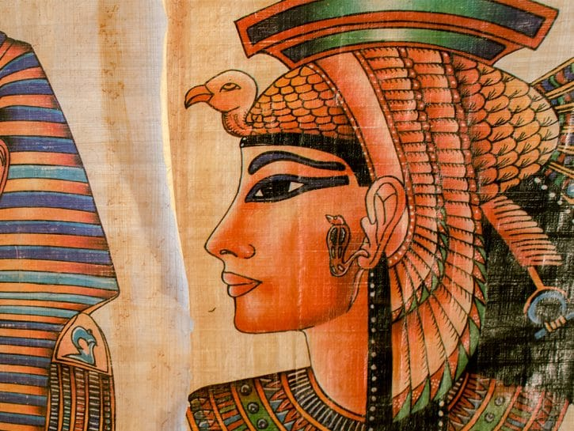
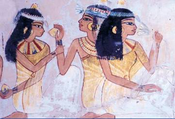
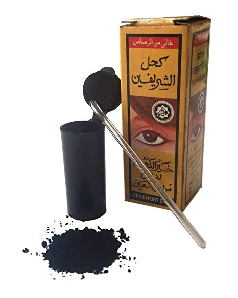

L'ORIGINE DEI COSMETICI
L'utilizzo del colore e della toelettatura personale è stato un rituale sin dai primi tempi della nostra storia. Nerofumo, fuliggine e polvere di minerali erano tra i primi ingredienti che venivano utilizzati per scurire o creare simboli sul corpo.
È ai tempi degli Egizi, però, che la cura della persona comincia ad evolversi diventando una vera e propria cultura. La regina Cleopatra, considerata come una delle prime icone di bellezza femminile in assoluto, truccava gli occhi scurendoli con del kohl ottenuto da resine bruciate oppure colorandoli con polvere di malachite, una pietra dal colore verde/turchese.
Anche il profumo era di utilizzo comune e di solito veniva utilizzato sottoforma di unguenti che venivano colati... direttamente in testa! Spesso infatti si trattava di odori che fungevano anche da repellenti per gli insetti.
fonte:www.donnamoderna.com
  